Capítulo 2 Política y ciudadanía
2.1 Identificación política
¿Cómo se posicionan políticamente los chilenos?
La emergencia y consolidación en el poder de nuevas coaliciones políticas, así como la intensificación de los ciclos de protesta, hacen preguntarse por cómo ha evolucionado la identidad política de los chilenos.
La Figura 2.1 muestra la foto más reciente de ELSOC acerca de cómo se distribuyen las preferencias ideológicas de la población adulta chilena, mientras que el Figura 2.2 muestra el cambio en las preferencias entre los años 2016 y 2021. Este último indica que la no identificación con posiciones ideológicas ha dejado de ser la respuesta mayoritaria, reafirmando al centro como la posición política con que más sujetos se identifican. Así, en 2021, por primera vez se observa que menos de un 20% afirma no identificarse con ninguna posición del espectro izquierda-derecha, al tiempo que el centro obtiene más de un 35% de identificación.
Figura 2.1: Identificaci<U+00F3>n pol<U+00ED>tica (2021)

Figura 2.2: Identificaci<U+00F3>n pol<U+00ED>tica, seg<U+00FA>n ola del estudio

Las Figura 2.3 es un gráfico aluvial que muestra cómo las personas mantienen o cambian sus posiciones ideológicas en cada ola del estudio. Se evidencia como tras los muy estables números agregados de cada año se esconde una proporción importante de personas transitan entre categorías ideológicas, aunque mayoritariamente entre grupos adyacentes.
Figura 2.3: Cambios en identificaci<U+00F3>n pol<U+00ED>tica, seg<U+00FA>n ola del estudio
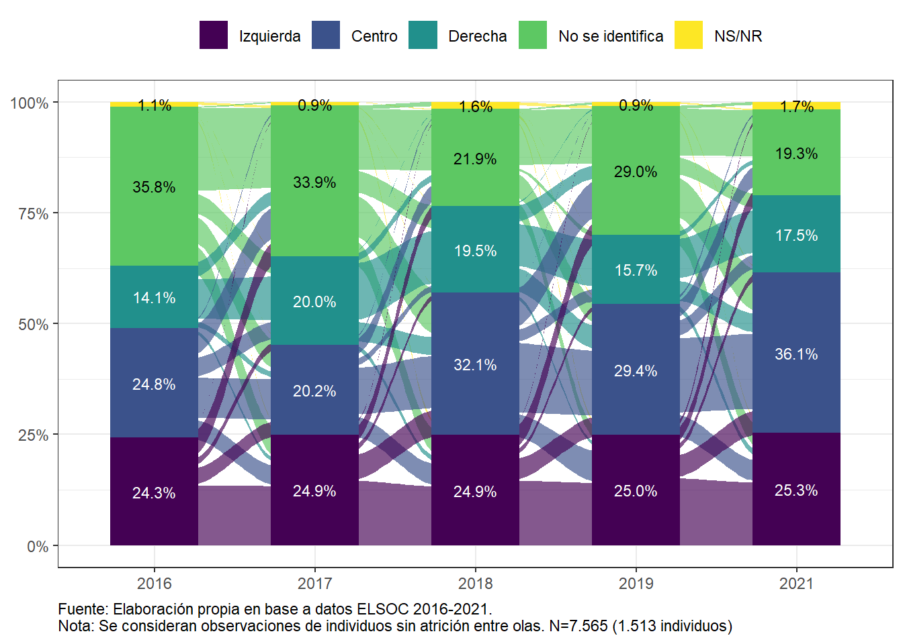La Figura 2.4 muestra el porcentaje que en cada ola del estudio respondió otra categoría ideológica que había mencionado el año anterior. Como se puede observar casi la mitad de las personas cambia de posición política consistentemente año a año. Estos patrones hablan a favor de dos segmentos de la población (numéricamente similares); uno con perfiles ideológicos altamente cristalizados y estables, y otro más bien volátil y fluctuante.
Figura 2.4: Porcentaje que cambia su identificaci<U+00F3>n pol<U+00ED>tica entre olas del estudio, seg<U+00FA>n ola
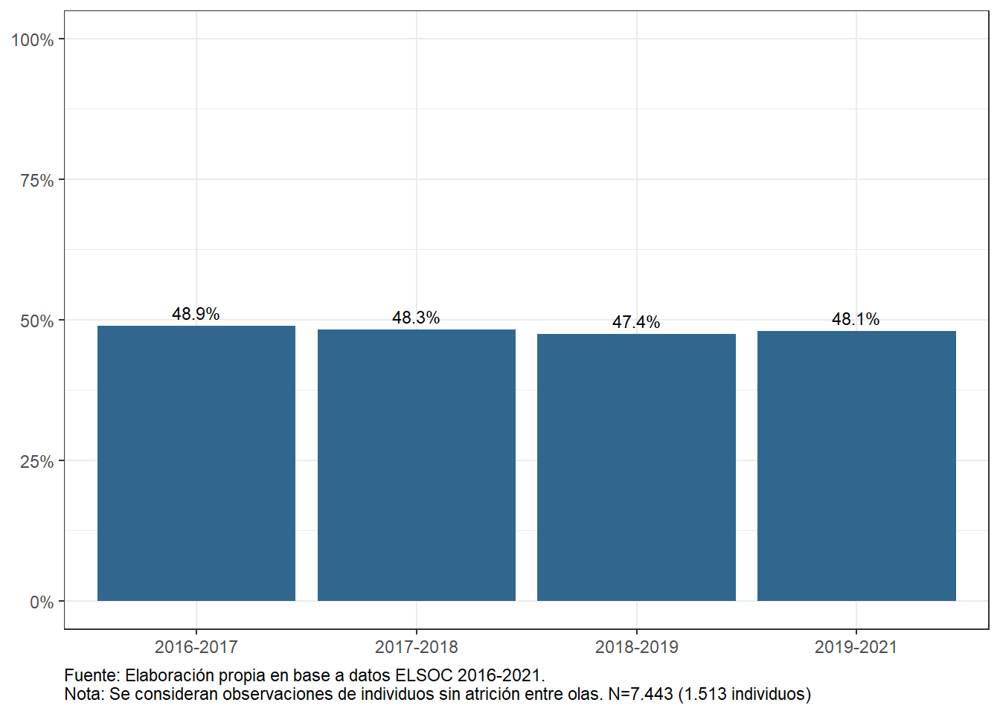La Figura 2.5 muestra el cambio entre posiciones ideológicas entre 2016 y 2021 según la posición mencionada en 2016. Destaca que las personas identificadas con el centro son las más estables, con cerca de un 54% que se mantuvo en la misma posición. Las personas de izquierda y derecha tienen un comportamiento espejo, donde cerca de un 47% de cada grupo mantiene su identidad 5 años después de la primera entrevista, mientras que el resto migra mayoritariamente al centro y en una menor proporción a la no identificación. La ausencia de identidad ideológica se asocia a mayor volatilidad, donde sólo un 31% mantuvo su posición, obteniendo elevada migración al centro (32%) y la izquierda (21%). La Figura 2.6 denota que los cambios inter-ola de posición ideológica se concentran mayormente en población jóven (70% entre 18-29 años), mientras que entre los grupos mayores los niveles de cambio son menores y más similares entre grupos etarios (57% entre 30-49 años y 50% entre mayores de 65). Este patrón es enteramente consistente con la hipótesis de los años impresionables según la cual las actitudes de las personas son más inestables durante la adolescencia tardía y la adultez temprana, pero que se solidifican rápidamente y permanecen estables durante el resto del ciclo de vida (Krosnick y Alwin, 1989) .
Figura 2.5: Posici<U+00F3>n pol<U+00ED>tica en 2021, seg<U+00FA>n posici<U+00F3>n pol<U+00ED>tica en 2016

Figura 2.6: Porcentaje que cambia su identificaci<U+00F3>n pol<U+00ED>tica entre 2016 y 2021, seg<U+00FA>n grupo et<U+00E1>reo

2.2 Interés en la política y opinión pública
Un antecedente actitudinal fundamental de nivel de participación política de las personas es el nivel de interés general en la política y la frecuencia de discusión sobre temas políticos (Verba, Schlozman y Brady, 1995).
La Figura 2.7 muestra que el 2019 se produjo un alza importante en las personas bastante o muy interesadas en la política, pasando de 12,2% a 21,9%. Así mismo, la Figura 2.8 indica cambios similares en el porcentaje de personas que mencionan hablar de política con familiares (de 16% a 26%) o que usan redes sociales para opinar sobre temas políticos (10% a 20%). Estas alzas coinciden con las masivas, y en ocasiones altamente disruptivas, marchas ocurridas en el marco del llamado estallido social (la medición del 2019 se inició el 20 de noviembre). En contraste, el incremento en los niveles de politización observados entre 2018 y 2019 se revierten en buena medida en la última ola del estudio, donde el nivel de interés en política cae a un 15,2%, el hablar de política con familiares a un 21%, y el uso de redes sociales para opinar sobre temas políticos a un 14.5%.
Figura 2.7: Porcentaje Bastante o Muy interesado en pol<U+00ED>tica, seg<U+00FA>n ola del estudio

Figura 2.8: Participaci<U+00F3>n ciudadana, seg<U+00FA>n ola del estudio
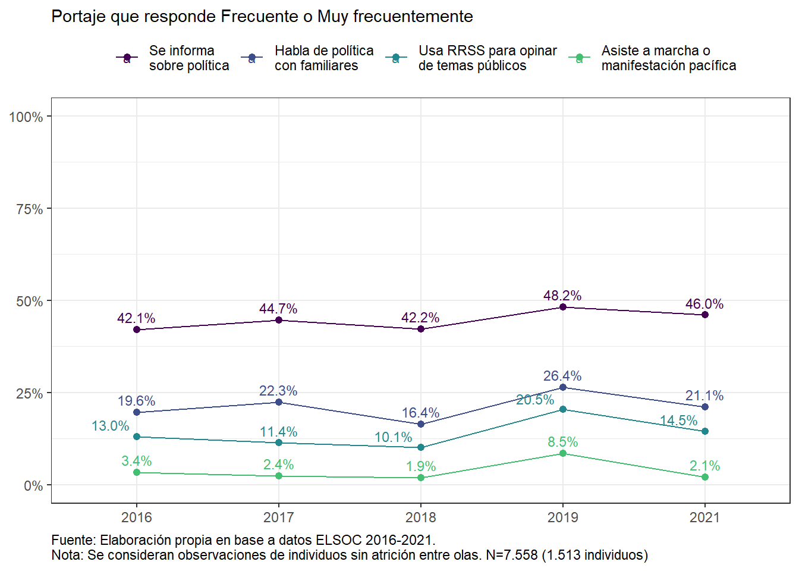La Figura 2.9 muestra una fuerte asociación estadística entre interés en política y preferencias ideológicas en el año 2021. La proporción de personas de izquierda crece en categorías de mayor interés, mientras que los individuos de derecha alcanzan proporciones similares sin importar el nivel de interés político. Los sujetos de centro se concentran en mayor medida en niveles de interés bajos, mientras que los sujetos que no se identifican tienden a coincidir con ausencia de interés en la política.
Figura 2.9: Identificaci<U+00F3>n pol<U+00ED>tica, seg<U+00FA>n grado de interes en la pol<U+00ED>tica (2021)

ELSOC también ha registrado durante múltiples años la opinión de las personas encuestadas respecto a diversos temas de discusión pública. Aquí pueden volver a verse patrones de cambio y estabilidad entre los años 2019 y 2021. La Figura 2.10 muestra, por un lado, que todos los grupos ideológicos han mantenido su posición frente al tema del aborto libre, pero por otra parte, se observa un incrementado acentuado, que fluctua entre los 12 y 17 puntos porcentuales, en el nivel de acuerdo con tomar medidas más drásticas para evitar mayor inmigración. Las alzas se pueden incluso notar en grupos menos proclives a estar de acuerdo con mayores restricciones como las personas que se identifican con la izquierda. En materia de pensiones, las personas de izquierda y centro han mantenido sus posiciones similares, mientras que las de derecha y que no se identifican han incrementado su acuerdo con que las personas deben ser responsables de su propia pensión, cuestión que puede deberse a la mediatización de los retiros de las AFP como derecho de propiedad individual sobre los fondos de pensiones.
Figura 2.10: Acuerdo con temas de discusi<U+00F3>n p<U+00FA>blica, seg<U+00FA>n posici<U+00F3>n pol<U+00ED>tica (2019-2021)

2.3 Análisis de Clases Latentes: Participación política
El proceso de cambio constitucional, las recientes elecciones presidenciales y el estallido social han implicado transformaciones en materia de participación política en el país. El plebiscito superó por primera vez el 50% de participación desde la instauración del voto voluntario e inscripción automática, mientras que la segunda vuelta presidencial incorporó a cerca de 1.300.000 votantes más que la misma elección de 2017. Asimismo, el estallido social supuso un incremento nunca antes visto de eventos de protesta (Observatorio de Conflictos, 2020). Ante este panorama, cabe preguntarse cómo es la estructura longitudinal de participación política de los chilenos y chilenas, tanto en el ámbito electoral como en manifestaciones.
Perfiles de participación: aproximación empírica
Con el objetivo de determinar patrones de participación política en el tiempo, se efectuó un análisis de clases latentes que permitió categorizar a los individuos según sus patrones de participación en el plebiscito constituyente, las elecciones presidenciales de 2013 y 2017, y en eventos de protesta (consideramos si declararon participar -a veces, frecuentemente o muy frecuentemente- en marchas o manifestaciones pacíficas en cada una de las cinco olas del estudio). El análisis arrojó cinco categorías de participación política: (1) Reactivos, (2) Desafectados, (3) Politizados, (4) Institucionales y (5) Hiper-politizados.
Perfiles de participación: principales resultados
La Figura 2.11 muestra los perfiles de participación identificados y su caracterización según las variables que compusieron el análisis de clases latentes. El grupo más numeroso, con un 47,2% de los individuos, corresponde a los Institucionales, que participan reiteradamente de procesos electorales y son inactivos en protestas. La participación electoral de estos individuos se acrecentó en las elecciones de 2017, aunque se redujo en el plebiscito de 2020.
Consistente con el diagnóstico de un elevado nivel de desconfianza política en la sociedad chilena, un 28,9% compone el grupo de Desafectados. Estos se caracterizan por sus virtualmente nulos niveles de participación política, ya sea convencional (votar) o no convencional (participar en marchas). No obstante, se observan niveles de participación más elevados en las elecciones de 2013 y el plebiscito, aunque muy distantes de los promedios nacionales.
Un 17,3% compone el grupo de Politizados, individuos con -relativamente hablando- elevados niveles de participación electoral y participación en protestas. Los integrantes de este grupo fueron particularmente activos en las movilizaciones de 2019, año en que su participación no convencional triplicó la de años anteriores.
Un 3,9% son los Reactivos, quienes suelen tener bajos niveles de participación electoral y en manifestaciones, aunque se involucraron sustantivamente en el plebiscito de 2020 y en las movilizaciones de 2019. Así, estos individuos requieren de eventos de participación ampliamente mediatizados y debatidos en la opinión pública para involucrarse en la vida cívica.
Finalmente, están los llamados Hiper-politizados, que se caracterizan por ser un grupo muy pequeño de la muestra (2,7%), pero que son inusualmente activos en la expresión de su voz ya sea en eventos electorales o en manifestaciones. Su participación se redujo levemente en 2019 y 2021, aunque también incrementó en el plebiscito 2020.
En suma, los resultados indican que los grupos que menos expresan su voz política son también los más grandes en términos numéricos (Desafectados e Institucionales suman el 76% de la muestra), al tiempo que el grupo, por lejos, más activo es el más pequeño (Hiper politizados).
Figura 2.11: Perfiles de participaci<U+00F3>n pol<U+00ED>tica: 5 clases
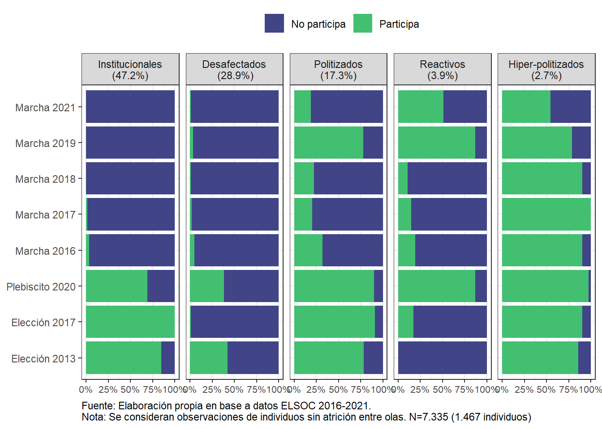Caracterización de perfiles de participación
La Figura 2.12 muestra cómo se distribuyen estos grupos según posiciones ideológicas. Destacan los Hiper-politizados por su elevado nivel de homogeneidad ideológica con una fuerte concentración de individuos auto posicionados como de izquierda (65,7%). Aunque en forma más matizada, las personas de izquierda también se encuentran concentrados entre los Politizados con un 40%, seguidos por las personas de centro con un 35,9%. En contraste, los Desafectados están mayoritariamente compuestos por individuos de centro (35,3%) o sin identificación política (32%). El grupo con mayor presencia de derecha es el de Institucionales (21,8%), aunque tienen una proporción similar de individuos de izquierda (20,8%) y también cuentan con una fuerte presencia de encuestados que se identifican con el centro político (38,8%). El grupo de los Reactivos es el que concentra un mayor porcentaje de sujetos de centro (43,2%), seguidos de un 29,2% de individuos de izquierda.
Figura 2.12: Posici<U+00F3>n pol<U+00ED>tica seg<U+00FA>n perfil de participaci<U+00F3>n

La Figura 2.13 muestra que el grupo de Politizados es el único en que predominan los hombres (59,9%), mientras que en los Hiper-politizados y Reactivos son marcadamente mayoritarias las mujeres, con un 68,9% y 56,9% respectivamente. Los Institucionales y Desafectados parecen tener una distribución por sexo más equilibrada con alrededor de un 54% de mujeres y 46% de hombres. La Figura 2.14 indica marcadas variaciones en términos de edad. Los Reactivos, Desafectados e Hiper-politizados son los grupos con mayor concentración de adultos jóvenes, con un 57,6%, 55,9% y 51,8% respectivamente. Se presentan también altos porcentajes de población juvenil en los Reactivos (33,5%) y Politizados (23,4%). Los Institucionales, en cambio, obtienen la más alta proporción de adultos mayores y mediana edad, con un 26,3% y 40,6%, respectivamente.
Figura 2.13: Sexo seg<U+00FA>n perfil de participaci<U+00F3>n
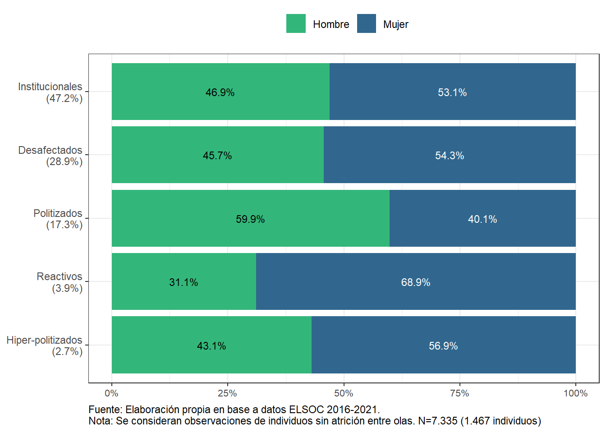Figura 2.14: Edad seg<U+00FA>n perfil de participaci<U+00F3>n

Figura 2.15: Educaci<U+00F3>n seg<U+00FA>n perfil de participaci<U+00F3>n
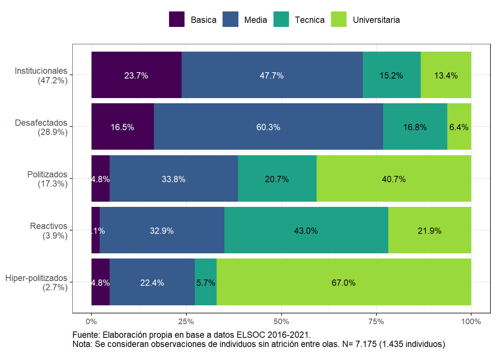La Figura 2.16 indica que los grupos con menor interés en la política son los Desafectados e Institucionales, con un 79,1% y 70,1% de personas con nada o poco interés. A ello le siguen los Politizados y Reactivos, con un 45,1% y 44,4%, respectivamente. El grupo de Hiper-politizados es el que alcanza mayores niveles de interés, con un 62,8% de individuos muy o bastante interesados, seguido de los Reactivos y Politizados con un 27,3% y 25,6%. Este patrón resulta del todo relevante ya que confirma que en Chile las personas más politizadas expresan sus demandas y preocupaciones por los canales no institucionales, al tiempo que los menos politizados abiertamente no participan de ninguna instancia o si lo hacen emplean los canales formales.
Figura 2.16: Inter<U+00E9>s en la pol<U+00ED>tica seg<U+00FA>n perfil de participaci<U+00F3>n

La Figura 2.17 muestra una alta insatisfacción con la democracia de parte de todos los grupos, aunque esta es aún más pronunciada en el grupo de los Hiper-politizados (83,6%) y Reactivos (79%). Si sumamos los porcentajes de personas altamente satisfechas y algo satisfechas, los niveles de satisfacción con la democracia son más altos entre los Politizados, Desafectados e Institucionales. Es decir, hay una marcada distancia de toda forma de acción política y la focalización en canales institucionales parecen ser indicativos de mayores niveles de satisfacción política.
Figura 2.17: Satisfacci<U+00F3>n con la democracia seg<U+00FA>n perfil de participaci<U+00F3>n
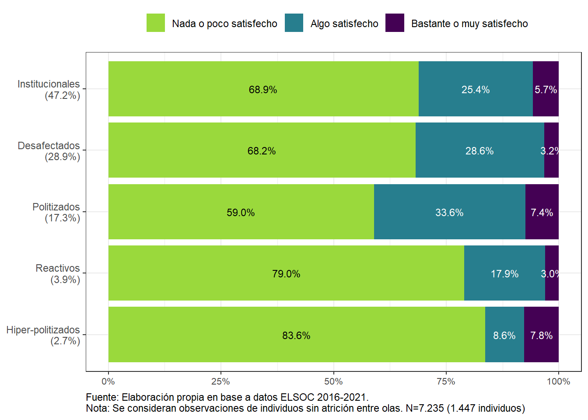La Figura 2.18 muestra que los Hiper-politizados y Politizados tienen una mayor preferencia por la democracia como régimen de gobierno, con un 88,1% y 81,3% respectivamente, versus sólo un 49,8%, 49,2% y 47,1% de apoyo democrático entre los Reactivos, Institucionales y Desafectados. Esto implica, no sin bastante ironía, que el grupo que más vota en elecciones políticas nacionales es, junto al que jamás participa políticamente, el que menos explícitamente apoya la democracia como régimen político.
Figura 2.18: Legitimidad democr<U+00E1>tica seg<U+00FA>n perfil de participaci<U+00F3>n
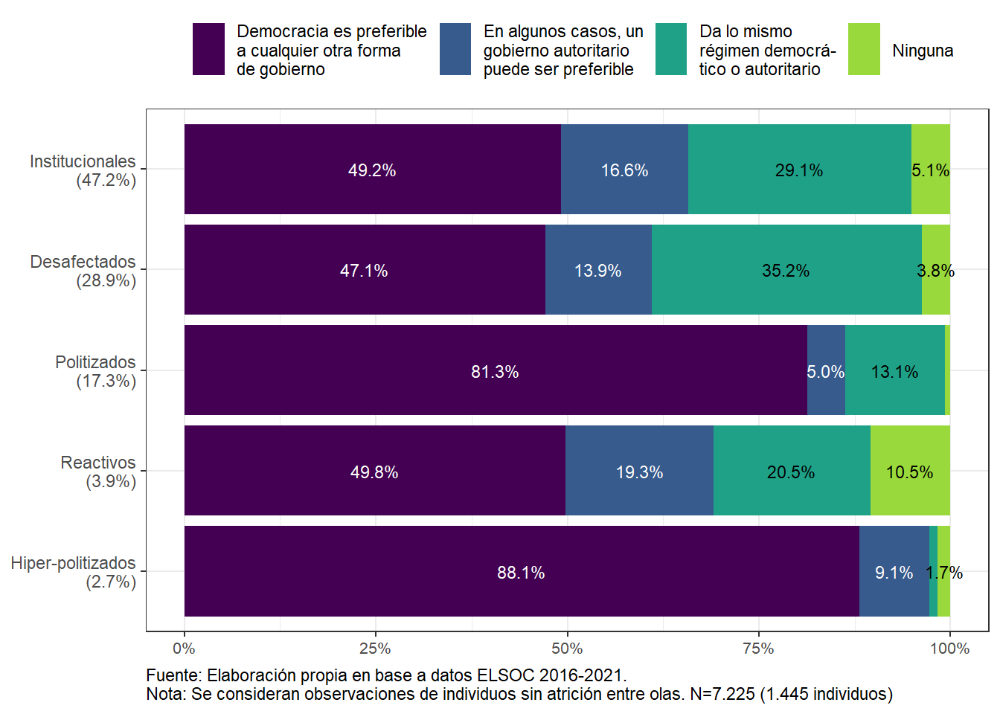Respecto al actual proceso constituyente, la Figura 2.19 muestra los niveles de optimismo constitucional. Se observan los mayores niveles de optimismo entre Hiper-politizados y Politizados, con más de un 70% de optimismo en ambos grupos. Los Reactivos están justo por debajo con un 69,3%, mientras que los Institucionales y Desafectados alcanzan un optimismo del 60,3% y 56%. Esto implica que entre todos los grupos prevalece una sensación positiva acerca del proceso constitucional, pese a existir diferencias inter-grupales relevantes en otras materias.
Figura 2.19: Optimismo constitucional seg<U+00FA>n perfil de participaci<U+00F3>n
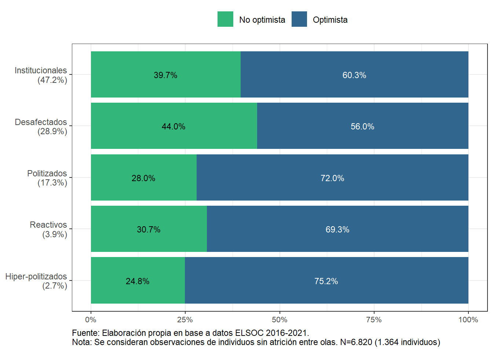2.4 Ciclo de movilización política y estallido social
Desde hace varios años en Chile se han desarrollado múltiples movimientos sociales, algunos de los cuales corresponden a movimientos progresistas, orientados a promover cambio social (por ejemplo, el movimiento Estudiantil, de pensiones, ambientalista) y otros a movimientos más conservadores (por ejemplo, el movimiento pro-vida o antiaborto o movimie to antidelicuencia). Proveyendo una lista de movimientos que han alcanzado visibilidad en Chile, se les ha consultado a los/as chilenos/as por los movimientos que más valoran. Tal como se puede apreciar en la Figura 2.20, para 7 movimientos se ha observado un aumento gradual en los niveles de valoración, (5 progresistas y 2 conversadores). Sin embargo, llama la atención la disminución sustantiva que alcanzó la valoración del estallido social pasando desde un 22,8 % a un 15,7 % en el 2021. En su conjunto la valoración da cuenta del nivel de apoyo que tienen estos movimientos sociales.
Figura 2.20: <U+00BF>Cu<U+00E1>l de los siguientes movimientos sociales m<U+00E1>s valora? (2019-2021)

Al analizar cómo ha evolucionado la valoración de los movimientos progresistas y conservadores a lo largo de los años (ver Figura 2.21), se puede constatar un aumento sustantivo de la valoración de los movimientos progresistas que alcanzan un nivel muy alto el año del estallido social (2019) y el año en que se llevó a cabo el plebiscito para la convención constituyente (2021). Esta alta valoración de los movimientos progresistas revela en parte el nivel de politización que alcanzó la población, particularmente durante los dos últimos años al valorar aquellos movimientos que se orientan particularmente al cambio social. Un patrón opuesto se observa en el caso de los movimientos conservadores donde se constata una caída gradual a lo largo de los años de su valoración, aunque se registra una importante recuperación entre el 2019 y 2021 donde pasa de un 6.5% a 14.7%.
Figura 2.21: Movimiento social que m<U+00E1>s valora, Seg<U+00FA>n ola

Cuando analizamos la participación política según el movimiento social más valorado a lo largo del tiempo, verificamos que los/as chilenos/as reportan bajos niveles de participación entre los años 2016 y 2018, puesto que solo 5.2% y 4.0% respectivamente reportan participar “frecuentemente o muy frecuentemente” en el movimiento social que más valoran. Ya el año 2019, el año en que ocurre el estallido social, la participación sube considerablemente alcanzando un 11.2% de personas que participan “frecuentemente o muy frecuentemente.” Si bien es cierto durante el 2021 se observa una caída respecto del año anterior, los niveles de participación fluctúan en torno a un 10.1%. Estos resultados apuntan a que, por lo general, la participación regular en movimientos sociales es baja en Chile pero que, en el contexto del Estallido Social y el año siguiente, los niveles de participación suben y se mantienen relativamente elevados en comparación con años anteriores.
Figura 2.22: Participaci<U+00F3>n en movimientos sociales valorados, seg<U+00FA>n ola
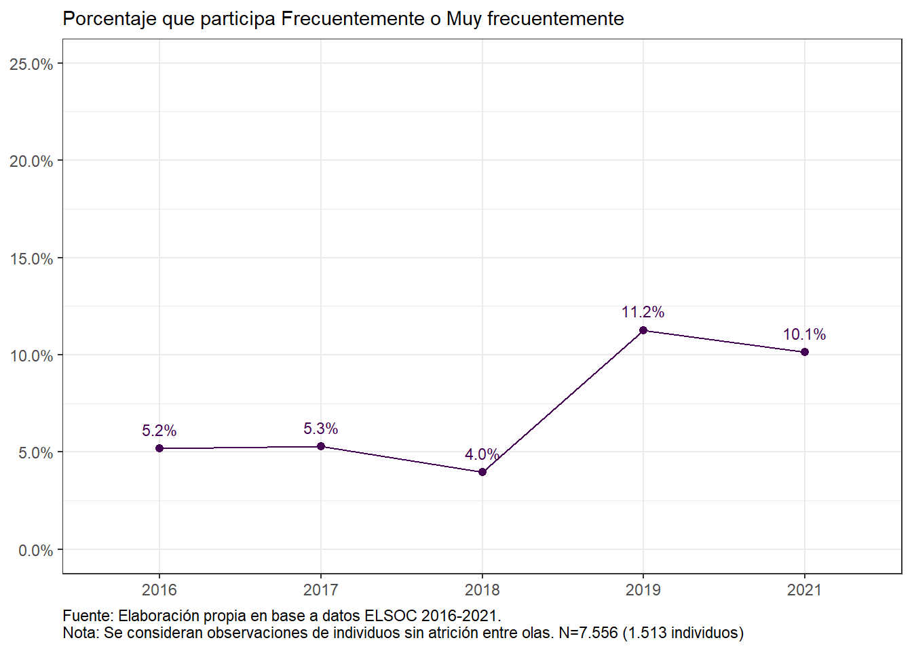Cuando nos enfocamos en la evolución de la participación en movimientos progresistas y conservadores a lo largo de los años, se constata un aumento de la participación en los movimientos progresistas durante 2019, año en que 14.5% de los/as chilenos/as reportan participar “frecuentemente o muy frecuentemente” en este tipo de movimientos sociales. No obstante, la participación regular en movimientos progresistas disminuye un poco el año de 2021 (con 11.8% de personas reportando participar “frecuentemente o muy frecuentemente”).
Por otro lado, la participación en movimientos sociales conservadores, tiene un peak el año de 2017, con 5% de las personas reportando participar “frecuentemente o muy frecuentemente,” valor que decae a 1.3% durante el Estallido Social (2019), subiendo de nuevo a 3.1% durante 2021. Finalmente, el porcentaje de personas que reporta no participar de ningún movimiento social fluctúa entre el 2% y el 1.4% entre 2016 y 2021.
En su conjunto, estos resultados revelan mayores niveles de movilización social relacionados con temáticas y demandas progresistas a lo largo del tiempo, en comparación con la movilización en torno a movimientos más conservadores.
Figura 2.23: Participaci<U+00F3>n en tipos de movimientos sociales, seg<U+00FA>n ola

2.5 Justificación de la Violencia
La justificación de la violencia por parte de diferentes grupos siempre ha existido en las sociedades. En este sentido, para algunas personas, parece razonable la utilización de violencia para imponer demandas (violencia para el cambio social) mientras, para otras, la violencia policial o ciudadana se justifica si tiene como fin mantener el orden y seguridad en un contexto de alta efervescencia social (violencia para el control social). No obstante, el uso de la violencia, más allá de su propósito, trae consigo el riesgo de aumentar ciclos de violencia, generando una potencial escalada de hechos violentos que ponen en riesgo la convivencia y la seguridad de la ciudadanía y las fuerzas del orden. En Chile, desde el Estallido Social, se han visto distintos tipos de actos violentos y por ende es necesario entender cómo se configuran los cambios en la justificación de la violencia por parte de las fuerzas de orden y de la sociedad civil.
En particular, la violencia para el control social se refiere a actos de agresión física que tienen como finalidad mantener o restablecer el orden social imperante y se puede distinguir entre violencia llevada a cabo de manera privada por ciudadanos (linchamientos) y violencia institucional (violencia de Carabineros).
En ELSOC, analizamos la evolución de la justificación de dos tipos de violencia que buscan el control social: la violencia a manos de ciudadanos y la violencia policial.
Como se puede observar en la Figura 2.24, existe un grado importante de justificación de la violencia en contra de delincuentes, un patrón que se mantiene relativamente estable a lo largo del tiempo, alcanzando valores más elevados el año 2018 y un decrecimiento de su justificación durante el año 2019 respecto de la tendencia del año anterior.
Así, cuando se pregunta sobre la justificación para perseguir y golpear a un delincuente que acaba de cometer un asalto, el año 2016, un 29% de los/as chilenos/as cree que se justifica “muchas veces o siempre” este actuar, mientras en 2019 este valor baja a un 25.6%.
Por otro lado, cuando se pregunta cuán justificable es que las personas amarren y desnuden a un delincuente que acaba de cometer un asalto, la justificación de este tipo de actos es menor en comparación con perseguir y golpear a un delincuente. Si durante el 2016 solo 15% de las personas defienden este tipo de acción para el control social, en el 2018 sube a un 19.2% y posteriormente durante el 2019, este valor baja a un 14% que justifica el mismo actuar.
Figura 2.24: Justificaci<U+00F3>n de la violencia a manos de ciudadanos, seg<U+00FA>n ola

Tal como lo revela la Figura 2.25, por lo general, existe una baja justificación de la violencia policial en distintos contextos a lo largo del tiempo. Más concretamente, cuando se trata del uso de violencia para reprimir una marcha pacífica, durante el año de 2016, el 7% de los encuestados reporta justificarse “muchas veces o siempre” el uso de la violencia. Esta justificación cae considerablemente el año 2019 (3.6%) periodo en el cual ocurre el estallido social, sin embargo, registra una nueva alza llegando a un 6.1% el año 2021.
Por otro lado, el uso de la violencia para desalojar a estudiantes de liceos en toma presenta un peak de justificación el año 2018 (17,9%), reduciéndose de manera sustantiva el año 2019 llegando a sólo un 8.2%, pero aumentando nuevamente a un 12.2% el año 2021.
Al consultar sobre el uso de violencia policial cuando estudiantes tiran piedras a Carabineros en marchas por la educación, desde el año 2018 se registra un aumento constante de la justificación de este tipo de acción policial, pasando de 3.5% justificable “muchas veces o siempre” ese año a 8.8% el año 2021.
Resumidamente, en comparación con años anteriores, el año de 2019 existen menores niveles de justificación de la violencia policial en los tres contextos analizados, pero el año 2021, vuelve a aumentar el nivel de justificación de la violencia policial, un fenómeno que puede potencialmente atribuirse al contexto post estallido social y a una menor validación de la movilización social durante la pandemia.
Figura 2.25: Justificaci<U+00F3>n de la violencia, seg<U+00FA>n ola

2.6 Confianza interpersonal y en instituciones
Confianza interpersonal
Durante las últimas décadas, las ciencias sociales han acumulado mucha evidencia que muestra que la confianza social es un atributo social de mucha importancia y cin múltiples consecuencias. Entre otras cosas, se ha asociado con comportamientos prosociales y menor criminalidad (Uslaner, 2000), mayor crecimiento económico (Dincer & Uslaner, 2010; Whiteley, 2000; Zak y Knack, 2001), mercados más eficientes (Fukuyama, 1996), democracias más robustas, y con mayor confianza en las instituciones (Newton & Zmerli, 2011, Putnam et al., 1994). En este contexto, el registro longitudinal de ELSOC de la confianza social de la población adulta chilena resulta de mucha importancia.
El gráfico 2.26 muestra la evolución de dos indicadores comunes de confianza social durante cada ola de la encuesta. Se puede notar que en Chile el indicador que consulta acerca de cuán confiables son las personas desconocidas, el ‘otro’ social imaginario, registra sistemáticamente niveles bajos que usualmente bordean el 12%. Más preocupante aún, entre 2019 y 2021, la confianza social bajó del 11,4% al 7,9%, un nivel de decrecimiento que es observado por primera vez en ELSOC. Estas bajas podrían estar potencialmente asociadas a la creciente polazaciónpolarización que se observa en el país, así como a los efectos del distanciamiento social forzados por la pandemia del Coronavirus. La percepción de que las personas son justas presenta un registro más favorable con un nivel estable alrededor del 30%.
Figura 2.26: Confianza interpersonal, seg<U+00FA>n ola

Detrás de la estabilidad temporal yace un gran nivel de diferenciación transversal en la confianza según distintos grupos socioeconómicos, particularmente educacionales. El gráfico 2.27 caracteriza la marcada desconfianza interpersonal en 2021, mostrando diferencias muy pronunciadas entre individuos con menor nivel educativo, que confían mucho menos y son más recelosos de cuán justos serán los demás,, e individuos con alto registro educacional registran mayor confianza en el otro y mayor percepción de comportamiento justo.
Figura 2.27: Confianza interpersonal (2021), seg<U+00FA>n nivel educacional
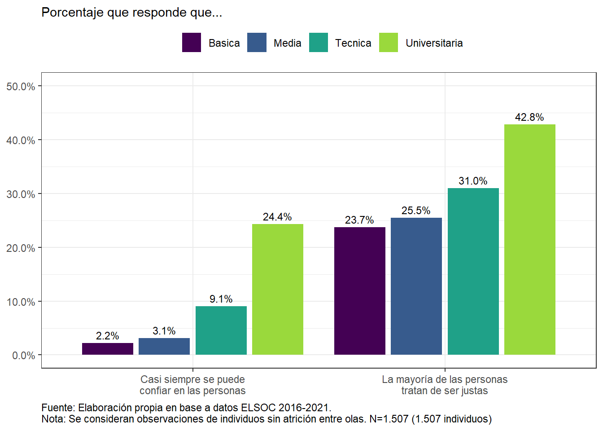Confianza en las instituciones
Las instituciones conforman los pilares organizacionales básicos de una sociedad, por lo que la estabilidad política está condicionada por la confianza que tienen los ciudadanos en las instituciones (Newton & Norris, 1999). Por ello, parte de las explicaciones al estallido social de 2019 se fundan en la elevada desafección que existe con las instituciones políticas (Sehnbruch & Donoso, 2020). Así, en el gráfico 2.28 y 2.29, se observan dos patrones altamente relevantes. En primer lugar, el nivel de confianza en las instituciones, y las políticas en particular, son extremadamente bajas. Año tras año, el porcentaje de personas encuestadas que mencionan confiar ‘Mucho’ o ‘Bastante’ en el Congreso y Partidos Políticos no alcanza siquiera el 5% de la población. Asimismo, el Poder Judicial y Presidente de la República registran durante sus mejores años niveles que apenas sobrepasan el 10%. La única institución, que logra alcanzar niveles más elevados, sin desmedro de una pronunciada baja durante el periodo de observación, son Carabineros de Chile con un mínimo de confianza de 20,6% en 2019 y 24,7% en 2021.
Segundo, varias instituciones como el Congreso, Gobierno y Carabineros experimentan una pronunciada baja en la confianza el 2019. Las primeras dos instituciones incluso llegan a niveles ínfimos de un sólo dígito, presumiblemente asociado al Estallido Social, al tiempo que los niveles logran recuperarse levemente en 2021. No se observan vaivenes en los Partidos Políticos ya que los niveles de confianza ni siquiera alcanzan el 1% en 2019 y 2020. Aunque las alzas constatadas durante la última ola son muy embrionarias, es posible que sean el resultado del proceso de cambio constitucional, que supone la elaboración de una nueva institución política -la Convención Constitucional- que involucró cambios relevantes en el sistema de representación, como la paridad de género, inclusión de escaños reservados a pueblos indígenas y la incorporación de listas completamente independientes de partidos políticos.
Figura 2.28: Grado de confianza en instituciones, seg<U+00FA>n ola

Figura 2.29: Grado de confianza en instituciones, seg<U+00FA>n ola
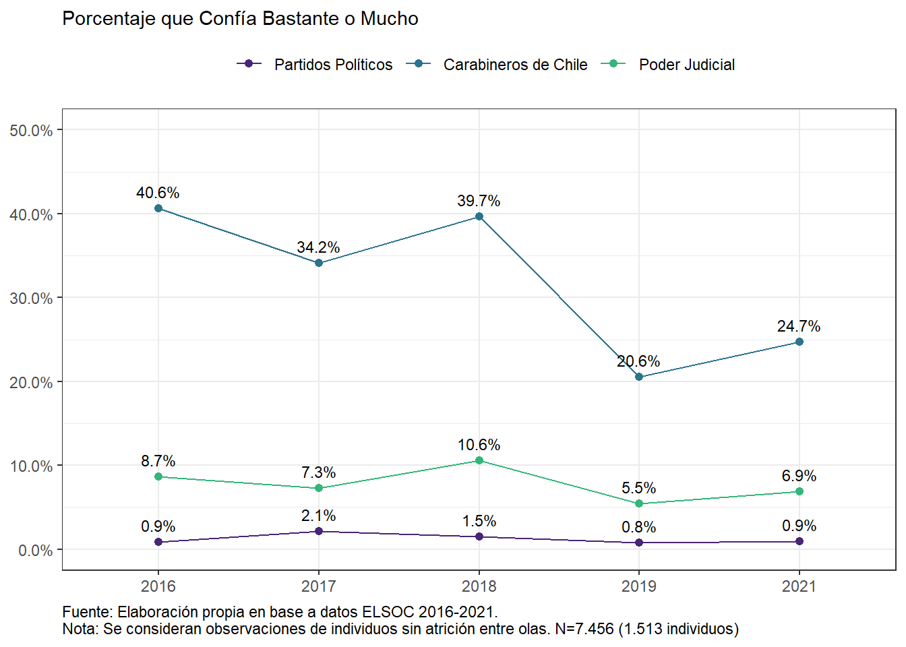Figura 2.30: Cambio en grado de confianza en instituciones (2016-2021)
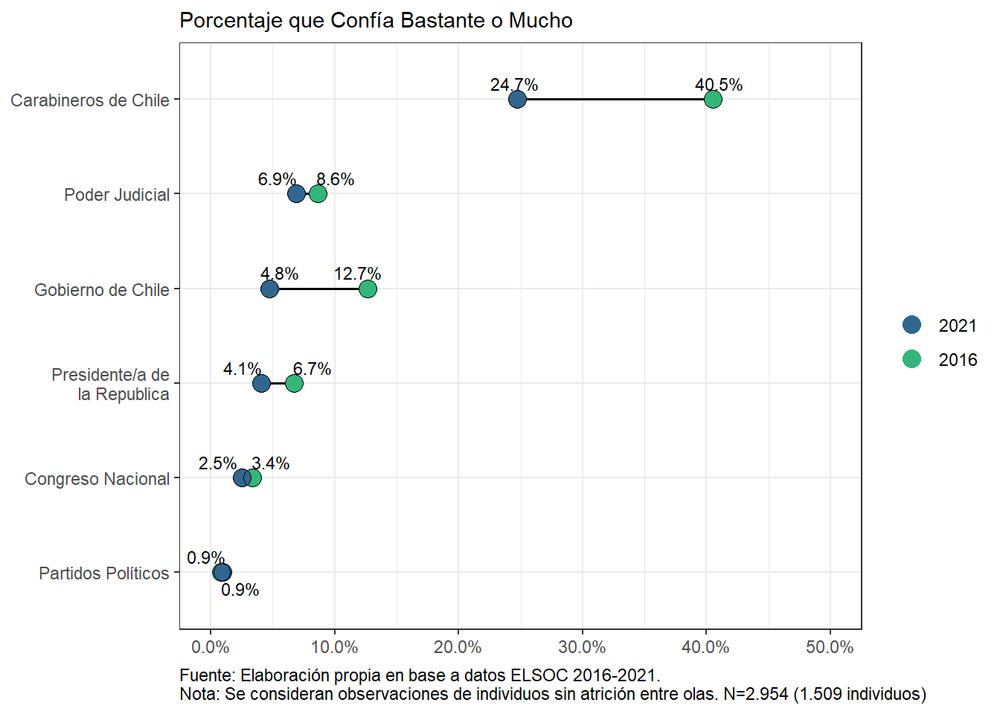2.6.1 Actitudes hacia la democracia
La literatura ha distinguido entre el apoyo a los principios del régimen democrático y el respaldo a su desempeño (Easton, 1975; Norris, 1999). Así, el apoyo a la democracia como valor último se ha denominado legitimidad democrática, mientras que la evaluación del funcionamiento de la democracia constituye la satisfacción con la democracia. El gráfico 2.31 muestra que en Chile se consolida el fenómeno global del ciudadano crítico (Norris, 1999), que refiere a individuos altamente comprometidos con la democracia como regimen político, superando niveles del 50%, aunque también altamente insatisfechos con su funcionamiento, pues desde 2019 la satisfacción con la democracia no supera el 6%.
Figura 2.31: Preferencia por y satisfacci<U+00F3>n con la democracia, seg<U+00FA>n ola

El gráfico 2.32 y 2.33 indican que el fenómeno del ciudadano crítico es transversal a la identificación en el espectro izquierda-derecha, aunque se presenta más marcadamente en sujetos identificados con la izquierda que legitiman en un 74,8% la democracia y solo un 4,1% está satisfecho o muy satisfecho con su funcionamiento. En contraste, los individuos de derecha tienen una menor legitimidad democrática, del 38,7%, al tiempo que un 8,9% está satisfecho o muy satisfecho con su funcionamiento.
Figura 2.32: Preferencia por y satisfacci<U+00F3>n con la democracia (2021), seg<U+00FA>n posici<U+00F3>n ideol<U+00F3>gica
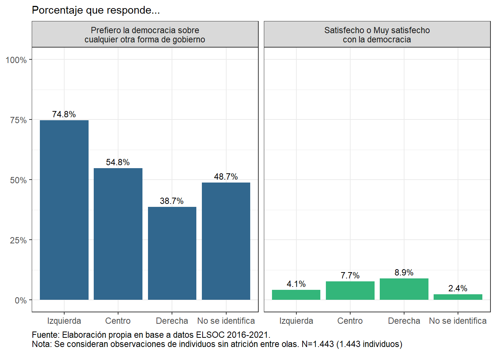Figura 2.33: Preferencia por la democracia (2021), seg<U+00FA>n posici<U+00F3>n ideol<U+00F3>gica
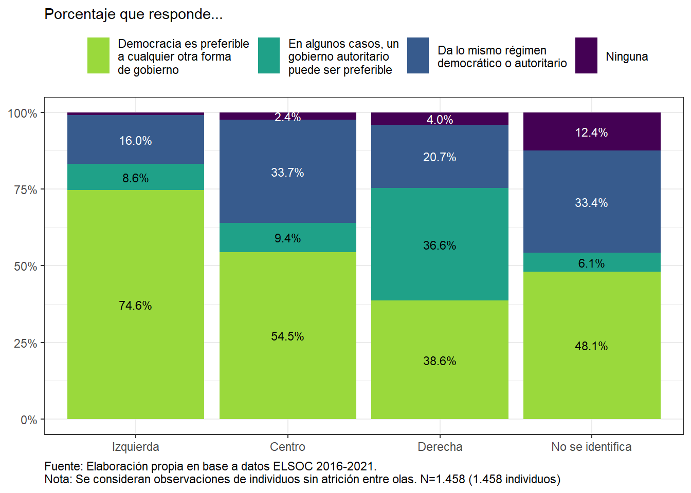2.7 Participación electoral
Con el inicio del proceso constituyente, durante 2020 y 2021 se realizaron procesos electorales novedosos en el país, los que combinados con los efectos de la pandemia, pudieron haber alterado el comportamiento electoral de los ciudadanos. El gráfico 2.34 muestra que existe un sobre-reporte de haber participado en elecciones, cuestión que coincide con la literatura de encuestas (Silver et al., 1986). Mientras que en el plebiscito participó un 50,9% del padrón electoral, ELSOC reporta un 68,6%, sobrerrepresentación que parece mantenerse estable elección a elección. No obstante, el gráfico 2.35 muestra que ELSOC se acerca bastante a la realidad al medir la intención de voto retrospectiva, con una diferencia de sólo 5% al predecir el apruebo respecto a los datos del SERVEL.
Figura 2.34: Participaci<U+00F3>n electoral, seg<U+00FA>n elecci<U+00F3>n
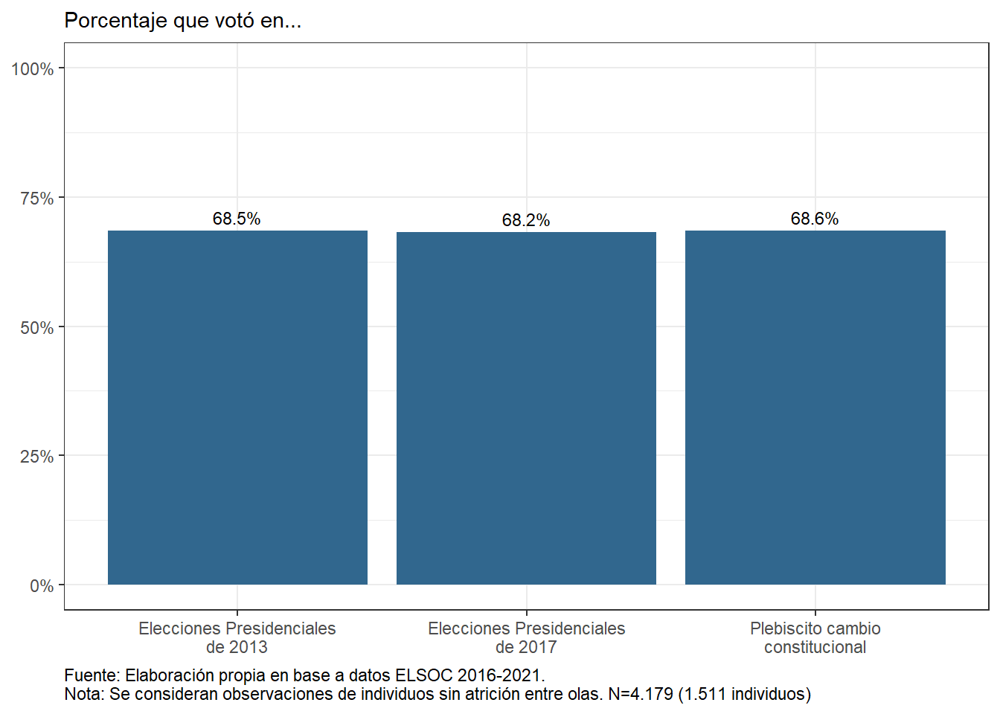Figura 2.35: Voto retrospectivo Plebiscito Nueva Constitucion

El gráfico 2.36 muestra que los patrones de participación electoral se vieron fuertemente alterados con el advenimiento de la pandemia y el proceso constituyente. La participación entre los adultos y adultos mayores se redujo considerablemente, mientras que aumentó la participación de personas menores de 49 años. Mientras que el 91% de los mayores de 65 años mencionaron haber votado en la elección del 2013, esta cifra se reduce a un 67% en el Plebiscito de 2020. En cambio los jóvenes de 18 a 29 años ascienden su participación desde un 53% en 2013 hasta un 75% en 2020. Esto constituye un severo cambio en la composición del electorado, pero cuya continuidad en el tiempo es aún desconocida.
Figura 2.36: Participaci<U+00F3>n electoral, seg<U+00FA>n tramo de edad
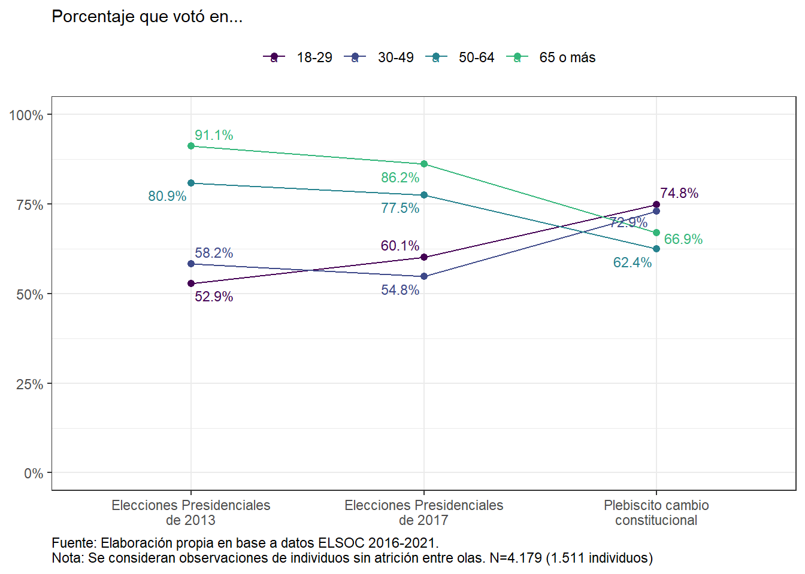En términos de preferencias ideológicas, el gráfico 2.37 muestra que la opción por el apruebo fue más votada entre los sujetos identificados con la izquierda, con un 80,2% comparado con un 46,7% entre quienes se identifican con la derecha. También se producen diferencias importantes en los niveles de abstención entre grupos ideológicos, donde un 18% de las personas que se identifican con la izquierda no votaron, cifra que asciende a un 36% y 32% entre las personas de centro y derecha, respectivamente. Esto es consistente con la idea de que la promesa de una transformación institucional se convirtió en fuerte motivante de participación. Los niveles de apoyo a la opción del Apruebo según tendencia ideológica se reiteran en el gráfico 2.38 que muestra que quienes votaron por candidatos de izquierda en elecciones pasadas también tendieron a votar de sobremanera por el apruebo. Por otro lado, el gráfico 2.39 robustece la idea del voto como hábito, pues quienes votaron en elecciones anteriores participaron del plebiscito en mayor proporción.
Figura 2.37: Voto en plebiscito de 2020, seg<U+00FA>n identificaci<U+00F3>n pol<U+00ED>tica
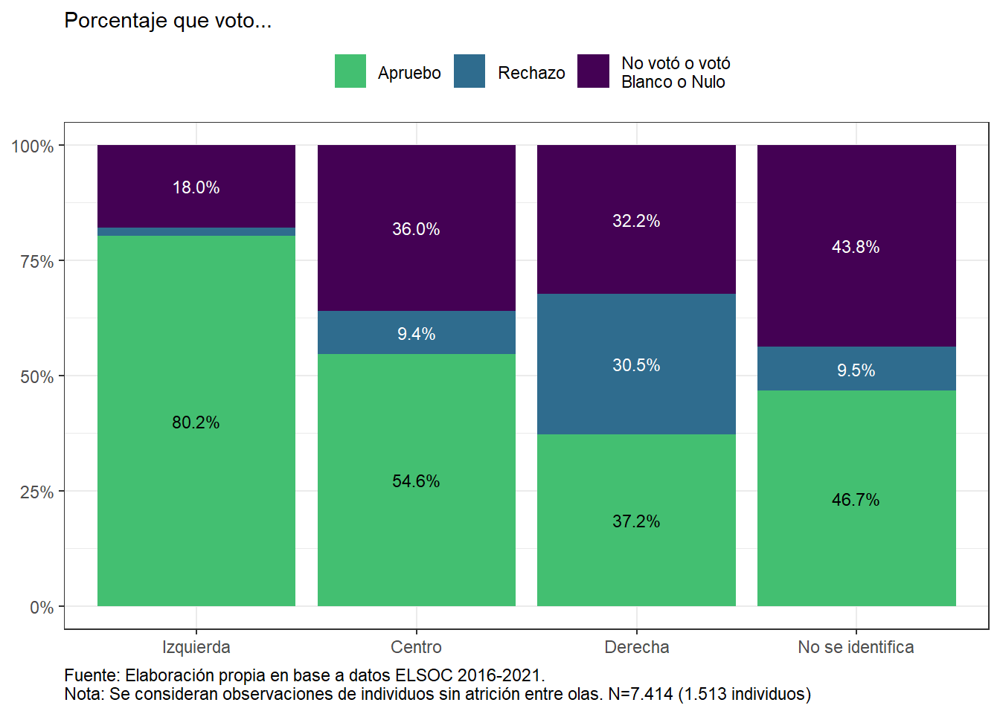Figura 2.38: Voto en plebiscito de 2020, seg<U+00FA>n voto en elecciones previas

Figura 2.39: Voto en plebiscito de 2020, seg<U+00FA>n voto en elecci<U+00F3>n presidencial de 2017

2.8 Proceso Constituyente
El plebiscito de 2020 dió inicio al proceso constituyente con un resultado del 78,31% por el apruebo y 79,18% por la opción de una Convención Constitucional. Pese a la magnitud del triunfo, la mediatización del cambio constitucional ha generado diversas posturas sobre el proceso en la opinión pública. El gráfico 2.40 muestra que existen altos niveles de optimismo respecto a los efectos que tendrá el proceso constitucional sobre la sociedad chilena. Un 62% de las personas encuestadas está de acuerdo o muy de acuerdo con que el proceso constituyente reducirá la desigualdad y un 50,2% con que disminuirá la corrupción. En contraste, los ítem que reflejan un prospecto desfavorable encuentran menor apoyo; un 33% de personas que están de acuerdo o muy de acuerdo con que impactará poco en la calidad de vida y un 22,9% considera que empeorará las condiciones económicas. Como es de esperar, los gráficos 2.41 y 2.42 muestran que existe un mayor nivel de optimismo entre quienes votaron apruebo (72,7%), al tiempo que el optimismo es similar entre grupos educativos. En el gráfico 2.43 se observa que la izquierda y las personas sin identificación política tienen los mayores niveles de optimismo, 72,7% y 66,9% respectivamente, en contraste al 61,4% del centro y el 44,8% de la derecha.
Figura 2.40: Optimismo constitucional

Figura 2.41: Optimismo constitucional, seg<U+00FA>n voto en plebiscito de 2020

Figura 2.42: Optimismo constitucional, seg<U+00FA>n nivel educacional
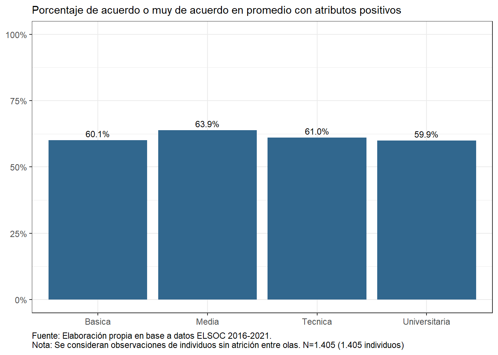Figura 2.43: Optimismo constitucional, seg<U+00FA>n identificaci<U+00F3>n pol<U+00ED>tica
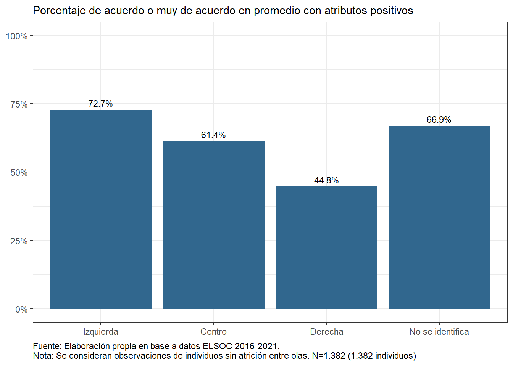